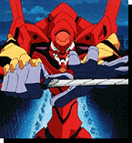

Welcome to my Neon Genesis Evangelion site. Here I hope to present my own views on the development of the characters and storyline, rather than just presenting the facts on each show. I am trying to present all new information, so if you are looking for music clips or images, please take a look at 9-eye's Evangelion page (also found here) for everything else Eva-related.
If the information seems a little out of date it's because I live in Australia and watch this great show on SBS Television, as local video shops don't stock it, and I have as yet to buy myself the set... As I see new episodes I will add any information pertinant to this site, so keep coming back!
As usual, this is a work in progress, so there are vast gaps in this site, as I am also working on other parts of my site, as well as working all day.
Last Updated: Sunday, 28th February, 1999
 | Pilot Overview |
| In Depth Character Information |  |
|  | Eva Information |
| Plot Development |
If you want to contact me then you can send to frumbert@hotmail.com or frumbert@geocities.com and I'll get eventually read it. If you have any suggestions on ways to improve this site please let me know. Also if I get enough mail I might even include a user feedback section where you can present your own analysis of characters and plots.
While you're here, why not visit my main site for information on many other tv shows, fan clubs and even a little about me..
-- frumbert
Please note: The use of images from the series on this site is given by permission from Gainax. You may not download or redistibute information from this site without first reading the terms of copyright set out by Gainax Co. If you are planning your own site, or wish to review the terms of this copyright, please click here. Other Gainax questions directed here.
http://members.xoom.com/frumbert/eva